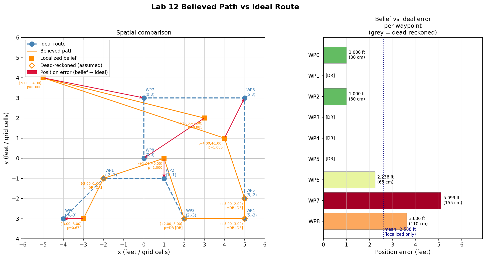

Goal
The goal of this lab was to navigate a robot through nine waypoints in the lab map using a combination of onboard closed-loop control and offboard Bayes filter localization. The robot rotates to face each waypoint using RPID, drives the computed distance using a Kalman filter assisted PID controller, and re-localizes at selected waypoints to correct accumulated error.
The waypoints in feet were: (-4, -3), (-2, -1), (1, -1), (2, -3), (5, -3), (5, -2), (5, 3), (0, 3), and (0, 0).
Working with a Different Robot
My robot broke at the EXPO prior to this lab, so I completed Lab 12 using Jamison Taylor's robot. Professor Helbling and I worked through troubleshooting my robot together and were able to narrow the issue down to the left motor driver, but could not determine the root cause since the wiring looked correct on inspection. With the lab deadline approaching I moved to JT's hardware instead. This required several adaptations before any navigation code could run. The drive pin assignments were different, so I had to overwrite all motor control functions. JT's wheel offset between left and right motors also changed constantly across trials, as varying battery levels changed the motor dynamics between runs, making it difficult to dial in turning accuracy consistently.
The Kalman filter matrices also had to be recalculated from a new step response on JT's robot, since the drag and mass parameters depend on the specific hardware. I also adjusted the RPID gains to match the new robot's turning behavior. The sigma values for the Kalman filter were changed as well, with sigma_u updated to 2500 and sigma_z updated to 1000, reflecting the higher uncertainty in the new robot's dynamics.
DRIVE_DIST Arduino Case
I wrote a DRIVE_DIST case to drive the robot a specified distance in millimeters. The case takes a runtime in milliseconds and a target distance in millimeters. It seeds the Kalman filter from the first ToF reading, then runs a proportional controller using the KF position estimate to track how far the robot has travelled from its starting position. I chose to operate at low PWM values since the robot was significantly more reliable in that range. The case sends a DRIVE_DONE acknowledgment back over BLE with the final KF and raw travelled distances when it finishes.
Python Navigation Architecture
Navigation was handled entirely offboard in Python through two classes: RealRobot and Navigator. The overall loop for each waypoint was: scan to collect 18 ToF readings, run the Bayes filter update step to localize, compute the heading and distance to the next waypoint, rotate using RPID, then drive using DRIVE_DIST. Waypoints were stored in feet and converted to millimeters for all BLE communication with the robot.
RealRobot
RealRobot wraps the three robot actions needed for navigation. perform_observation_loop triggers the SCAN case and returns sensor ranges and bearings for the Bayes filter. rotate sends a ROT_PID command and waits for a ROT_PID_DONE acknowledgment before returning. drive_distance sends a DRIVE_DIST command and waits for the DRIVE_DONE acknowledgment, which carries back the final KF and raw travelled distances. All three functions block until the robot acknowledges completion or a timeout fires.
Navigator
Navigator holds the waypoint list and the LOCALIZE_AT set, which specifies which waypoints get a full scan and Bayes update. For the best run shown below, localization was performed at waypoints 0, 2, 6, 7, and 8. All other waypoints used dead-reckoning, where the robot assumed it reached the ideal position and continued from there.
The localize method initializes a uniform grid belief, optionally weights the heading dimension using the robot's current estimated heading, then calls the Bayes filter update step and records the MAP cell position and probability. The navigate_to method computes the heading delta and distance from the current belief pose to the target waypoint. Large rotations are broken into a series of 20 degree increments ending in a final turn between 20 and 40 degrees. This was done because small RPID turns were significantly more accurate than large ones. After all sub-rotations complete, drive_distance is called with the computed distance in millimeters.
The run method loops through all waypoints in order, calling navigate_to then either localize or the dead-reckoning path for each stop, and logs every belief position for the final path plot.
Troubleshooting and Trial Process
Getting the navigation working required significant iteration. The main challenges were turn accuracy, localization reliability near the box, and the fact that my navigation code was originally written and tuned for my own robot. Running it on a robot with slightly different dynamics and hardware setup meant that gain values, minimum PWM thresholds, and timing assumptions needed re-tuning, and the behaviour was not always consistent across trials as a result.
Trial 1 used a rotation sigma of 15 degrees for the heading prior. This produced wild localization results and cascading errors in the navigation calculations. Reducing the rotation sigma to 5 degrees in Trial 2 improved localization substantially. I also changed the filter to restart with a fresh uniform prior at each waypoint rather than weighting the previous belief, since carrying forward a bad prior was compounding error across steps. Trial 2 produced much better navigation calculations, visible in the Python output after each turn, but the robot made a turn far beyond the intended angle. I cancelled the run to avoid a wall collision.
Trial 3 attempted a blend filter that gave more weight to the waypoint target the further the new belief was from it, to reduce the impact of bad localizations near the box obstacle. This did not work and was abandoned after one attempt.
Trial 4 introduced the sub-rotation strategy, breaking all turns into 20 degree increments. This significantly improved turn precision and became a permanent part of the approach.
Trial 5 limited localization to waypoints 0, 2, 7, and 8 only. The robot used dead-reckoning between those points. This found some success but produced large position errors at a few waypoints, with the robot driving along the wall at one point.
Trial 6 added waypoint 6 to the localization set. This worked reasonably well overall, with a localization failure at (0, 3) as the main remaining issue. This trial produced the best run captured on video and shown below.
Best Run
The path plot below shows the believed path versus the ideal route for the best run. Orange squares mark localized positions and open diamonds mark dead-reckoned positions. Red arrows show the error vector from each belief position to the corresponding ideal waypoint. The error bar chart on the right shows per-waypoint position error in feet, with grey bars indicating dead-reckoned waypoints. Localized waypoints 0 and 2 were within 1 foot of the true position. Waypoint 6 at (5, 3) had roughly 2.2 feet of error, and waypoints 7 and 8 had larger errors at 5.1 and 3.6 feet respectively. The mean error across localized waypoints was 2.6 feet. The larger errors at waypoints 7 and 8 are consistent with the localization difficulty near the box obstacle noted in Lab 11, but were also likely caused by overrun on the DRIVE_DIST function between waypoints 5 and 6, which pushed the robot very close to the wall. That positional error carried forward into the subsequent dead-reckoned legs and compounded by the time the robot reached waypoints 7 and 8.

Physical Run Video
The video below shows the robot executing the navigation run in the lab.
Localization Visualization Video
The video below shows the robot's localized belief positions updating in real time in the plotter during the same run. Localization only fires at waypoints 0, 2, 6, and 8.
References
I used JT's robot for this lab with his permission due to my robot breaking at the EXPO. I used AI assistance to help structure this write-up and check syntax.